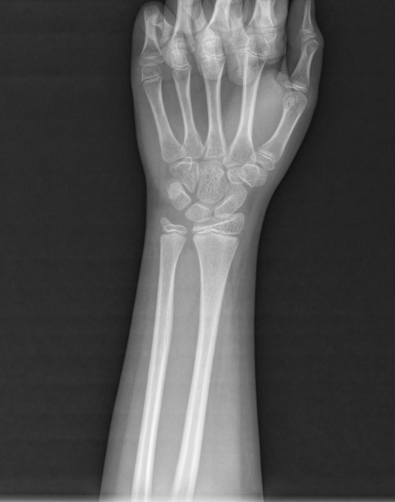
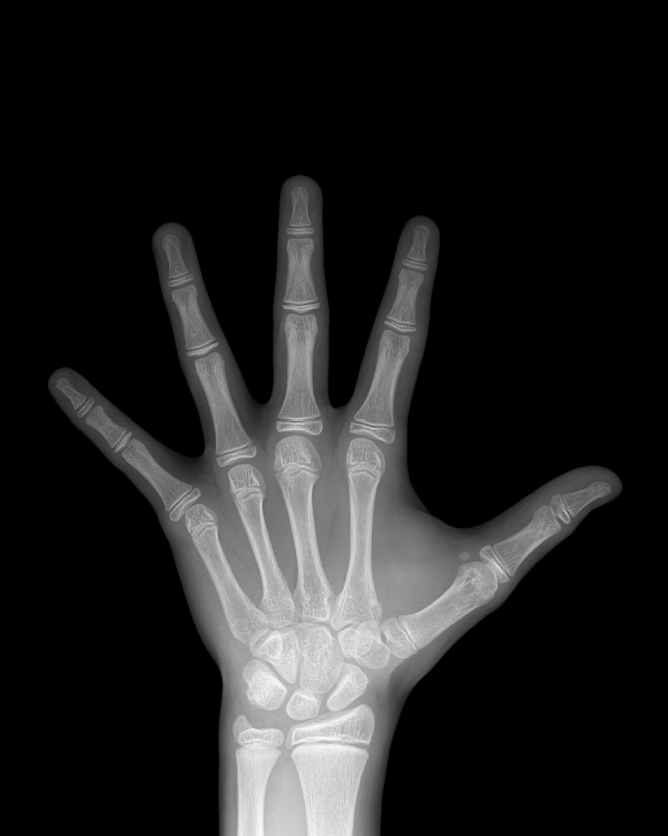

<section class="page xray-section">
  <!-- 페이지 제목 -->
  <div class="page-title">
    <span class="icon">💡</span>
    <span class="title-text">X-ray 영상</span>
  </div>

  <div class="xray-box-wrap">
    <!-- 검사자 X-ray -->
    <div class="xray-item">
      <div class="xray-box">
        
      </div>
      <p class="xray-caption"><span data-field-prefix="patient.name">허지호님의</span> X-ray 영상</p>
    </div>

    <!-- 참조 X-ray -->
    <div class="xray-item">
      <div class="xray-box">
        
      </div>
      <p class="xray-caption">
        <span class="badge">참조</span>
        <span data-field="xray.analysis_result">13세 5개월 남자의 X-ray 영상</span>
      </p>
    </div>
  </div>
</section>
